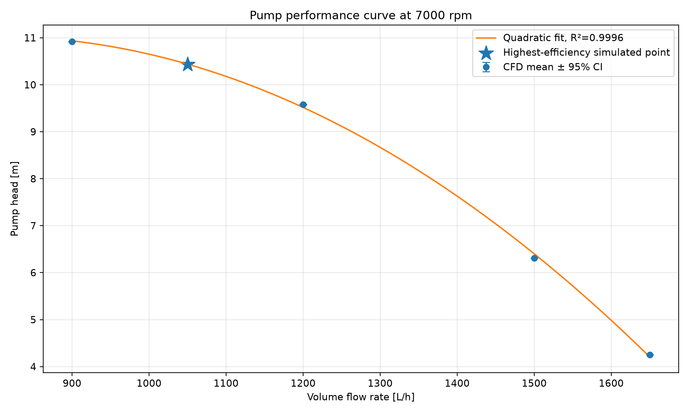
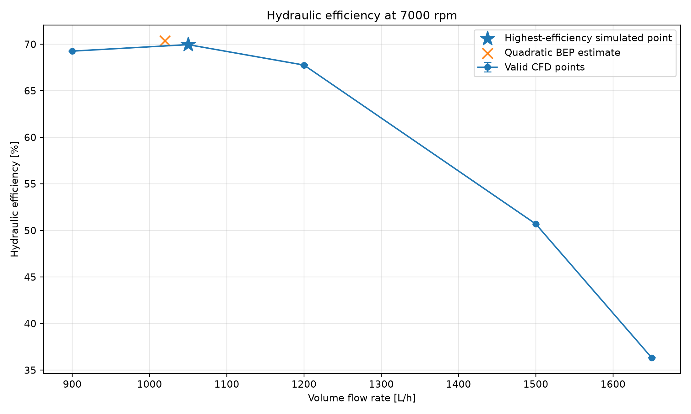
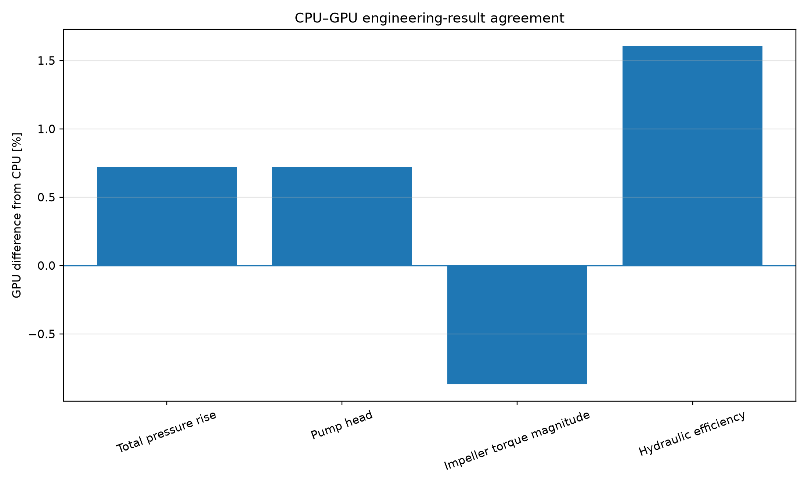
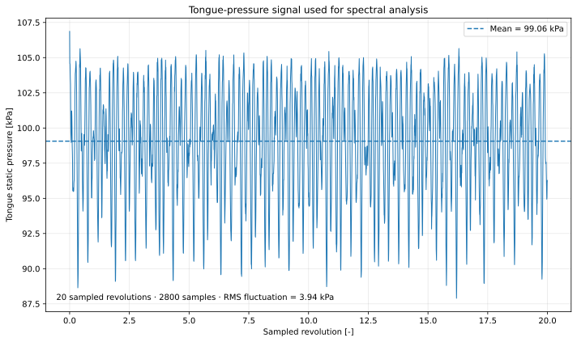
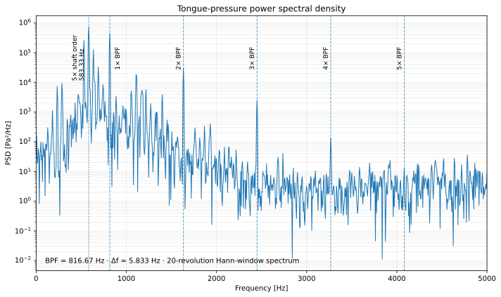
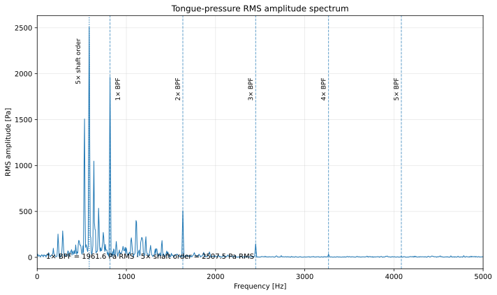

Model setup
The setup scripts define the MRF mesh, rotating region, boundary conditions and reports for pressure, flow and torque. The resulting case is reused for each run.
Model preparation ↗CASE STUDY / CENTRIFUGAL PUMP
PyFluent automation, CPU/GPU comparison and steady performance curves, followed by sliding-mesh analysis of pressure pulsation at the volute tongue.
MY CONTRIBUTION
I developed the PyFluent workflow and carried out the steady, transient and spectral analyses.ANSYS FLUENT 2025 R2 · PYTHON
01 / PYFLUENT AUTOMATION
Separate scripts handle model setup, operating-point runs and post-processing. The flow sweep and CPU/GPU comparison use the same saved MRF setup.
The setup scripts define the MRF mesh, rotating region, boundary conditions and reports for pressure, flow and torque. The resulting case is reused for each run.
Model preparation ↗The sweep reads flow rates from a CSV and launches a separate run for each enabled point. Each run loads the setup, applies the flow rate, initializes, solves, saves and closes Fluent.
Sweep implementation ↗The scripts check report completeness and evaluate the final 200 iterations. Head, torque and efficiency are calculated, and nonstationary points are excluded from the curve fits.
Acceptance & post-processing ↗The runner reads the backend, precision, processor count and operating conditions from a configuration dictionary. The functions below handle the main steps of a Fluent run.
Read the complete GPU runner ↗Selected calls from the runner · logging and guards omitted
# launch_solver() calls pyfluent.launch_fluent(**options)
solver = launch_solver()
read_complete_setup_case(solver)
update_flow_rate_named_expression(solver)
validate_report_definitions(solver)
perform_hybrid_initialization(solver)
reset_histories(solver)
run_iterations(solver)
write_solved_case_data(solver)The GPU runner checks pressure-report averaging, resets histories and waits for asynchronous report output. Previous valid results are kept until the new Fluent session launches successfully.
The transient runner uses the final saved mesh and sampling plan. The recovered SMM meshing script is not a verified CAD-to-mesh workflow.
02 / STEADY MRF PERFORMANCE
The MRF flow sweep at 7000 rpm provides head, torque and hydraulic efficiency across the operating range. Five operating points passed the stationarity checks. MRF provides the mean performance map; sliding mesh is used for the pressure-pulsation study.
Total-pressure head
Pressure rise expressed as hydraulic head.
Power transfer
Hydraulic efficiency
Ratio of useful hydraulic power to impeller input.
, using mass-flow-weighted total pressure. Static-pressure reports use area weighting. Q is in m³/s and . Efficiency describes hydraulic power relative to impeller shaft power; motor and electrical losses are outside this calculation.
Across the accepted points, head falls from 10.92 m at 900 L/h to 4.25 m at 1650 L/h. A quadratic fit describes this simulated interval with .
The 450, 600 and 750 L/h cases failed the final stationarity gate. They remain available as diagnostics but are excluded from the performance fit.

The highest-efficiency simulated point is 1050 L/h, 69.96%, with 10.44 m head. This flow rate sets the operating point for the transient study.
The fitted curve estimates a BEP near 1020 L/h and 70.35%. This point was interpolated, not simulated. The estimate applies to the accepted flow range.

The final-window coefficient of variation and fitted drift must meet 1% relative limits, with absolute tolerances for near-zero pressure signals. Accepted points must also have total-pressure rise ≥ 1 kPa and positive shaft power.
The plotted 95% intervals are nominal final-iteration mean intervals . They describe numerical history scatter, not mesh, turbulence-model or experimental uncertainty; iteration correlation can make them optimistic.
| Target Q [L/h] | Head [m] | [%] |
|---|---|---|
| 900 | 10.919 | 69.259 |
| 1050 | 10.435 | 69.956 |
| 1200 | 9.580 | 67.759 |
| 1500 | 6.310 | 50.693 |
| 1650 | 4.254 | 36.329 |
03 / CPU vs NATIVE GPU
The CPU and Native GPU comparison uses the same 2.096-million-cell setup at 900 L/h and 7000 rpm. Both runs used 1000 iterations, with statistics calculated over the final 200.
58.55 min saved in this matched run
These are calculation wall times for this case; preprocessing and post-processing are outside the comparison.
Speedup
Wall-time reduction
| Quantity | CPU | GPU | Δ [%] |
|---|---|---|---|
| Flow [L/h] | 899.974 | 899.956 | −0.002 |
| [kPa] | 114.244 | 115.068 | +0.722 |
| Head [m] | 10.8469 | 10.9252 | +0.722 |
| |Torque| [N·m] | 0.057121 | 0.056623 | −0.870 |
| [%] | 68.209 | 69.303 | +1.604 |
Efficiency differs by 1.094 percentage points, equivalent to 1.604% relative to the CPU value.

The GPU run reduced calculation time with a 0.72% head difference and a 1.60% relative efficiency difference. This comparison covers one operating point and does not establish experimental accuracy. The recorded hardware information specifies 14 CPU cores; the GPU model is not documented.
The dedicated 900 L/h repeat is kept separate from the original H–Q sweep snapshot, so its values are not substituted into that curve. Agreement data ↓ · Timing data ↓
04 / TRANSIENT SLIDING MESH
The sliding-mesh model at 1050 L/h and 7000 rpm resolves pressure changes as the seven impeller blades pass the volute tongue. The rotor physically moves across non-conformal interfaces.
The transient mesh contains approximately 2.48 million cells, with separate rotor, casing and pipe regions. The tongue is the stationary volute feature near the discharge where the passing blade flow interacts with the casing. An area-averaged static-pressure monitor on wall_tongue captures its local unsteady loading.
01 · Rotation
One revolution takes 8.5714 ms.
02 · Blade passage
Seven blade passages per revolution.
03 · Time resolution
20 samples per blade passage.
Physical time step
140 steps per revolution
Discard 85.714 ms of warm-up and retain the next 171.429 ms: 30 revolutions and 4200 steps in total. The plan permits up to 15 inner iterations per time step.
Blade-passage sampling is the basis for this Δt. Establishing temporal accuracy additionally requires time-step refinement and convergence checks within each step; the sampling plan alone does not demonstrate either.
An integer number of revolutions aligns the ideal BPF with a Fourier bin. The Hann window still addresses leakage from other content. Bin spacing is not the same as the window’s ability to resolve nearby peaks; Nyquist is a sampling limit, not a validated accuracy range.
05 / TONGUE PRESSURE
Fluent records the area-averaged static pressure on the tongue wall at each time step. The 2800 post-warm-up samples provide the mean pressure, fluctuations and spectra.

Spatial average · each step
One pressure value over the tongue surface at each time step.
Temporal mean · 2800 samples
The baseline over the complete sampled record.
Mean-removed fluctuation
This fluctuation sequence is the input to the pressure spectrum.
RMS pressure fluctuation
Overall fluctuation magnitude across the accepted record.
Revolutions → elapsed time
20 sampled revolutions at 116.6667 Hz.
The scalar mean establishes the pressure baseline. The PSD is computed from the sequence of fluctuations over the 2800-sample record.
The postprocessor joins the performance and tongue-pressure reports by time step and calculates elapsed time using the saved sampling plan. Subtracting the temporal mean removes the DC component before spectral analysis.
06 / PRESSURE SPECTRUM
The PSD and RMS amplitude spectrum quantify the frequency content of the pressure fluctuations. Comparisons across sampling windows and individual revolutions assess the stability and phase consistency of the main components.
The one-sided spectral density has units of Pa²/Hz. Integrating a frequency band gives its estimated pressure variance; its square root gives band RMS. A PSD peak height by itself is not a harmonic RMS amplitude.

The postprocessor calls SciPy’s Welch routine with density scaling and no additional detrending after mean removal. Its full-record default uses all 2800 samples in one Hann segment, so it reduces to a modified periodogram rather than an average over multiple independent segments. The displayed record has 5.833 Hz bin spacing; shorter Welch segments would trade frequency resolution for averaging.
The one-sided FFT is corrected for Hann-window coherent gain and converted from peak to RMS amplitude for the interior positive-frequency bins. This makes the blade-passing components interpretable in pressure units.

| Harmonic | Frequency [Hz] | RMS [Pa] |
|---|---|---|
| 1× BPF | 816.67 | 1961.6 |
| 2× BPF | 1633.33 | 508.7 |
| 3× BPF | 2450.00 | 147.2 |
| 4× BPF | 3266.67 | 34.3 |
| 5× BPF | 4083.33 | 10.9 |
The BPF fundamental leads its harmonic family, with rapidly decreasing amplitudes at higher orders. However, the full pressure spectrum contains a stronger component at : approximately 2507.5 Pa RMS, versus 1961.6 Pa RMS at the BPF.
The 5×/BPF amplitude ratio changes from about 0.96 in the first 10 revolutions to 1.45 in the last 10. It is about 1.28 over the full record, so the fifth-order component remains significant in both the full and later sampling windows.
Per-revolution complex harmonic analysis shows strong phase consistency at the BPF in both tongue pressure and impeller torque. The fifth-order pressure component is less consistent, while its torque counterpart has much weaker phase coherence.
These are phase-coherence values across revolutions from the project’s harmonic analysis, not magnitude-squared coherence between two measurement signals.
| Signal / shaft order | Coherence | Drift [°/rev] |
|---|---|---|
| Tongue pressure · 5× | 0.834 | −2.972 |
| Tongue pressure · 7× / BPF | 0.991 | −0.325 |
| Tongue pressure · 14× | 0.993 | +0.027 |
| Torque · 5× | 0.249 | −63.586 |
| Torque · 7× / BPF | 0.990 | −0.396 |
SPECTRAL RESULTS
The blade-passing frequency is the dominant phase-locked rotor response. A stronger, less phase-coherent fifth shaft-order pressure component is also present at the tongue.
The monitor set does not uniquely identify the fifth-order mechanism. Spatial pressure probes, longer records and sensitivity studies would be needed before attributing it to a specific instability. These are hydrodynamic pressure spectra, not acoustic sound-level predictions.CODE AND DATA
The repository contains the Python workflow, sampling plan, figures and processed results. The performance tables and phase-coherence results are also available below as CSV files.
Discuss this project ↗Figures and processed results: pyfluent_pump, source snapshot 3795e4850ac5. Repository links require access. The repository contains curated results; the large solver files and raw report histories are not included in this case page. No new CFD solve or experimental validation was performed to prepare it.